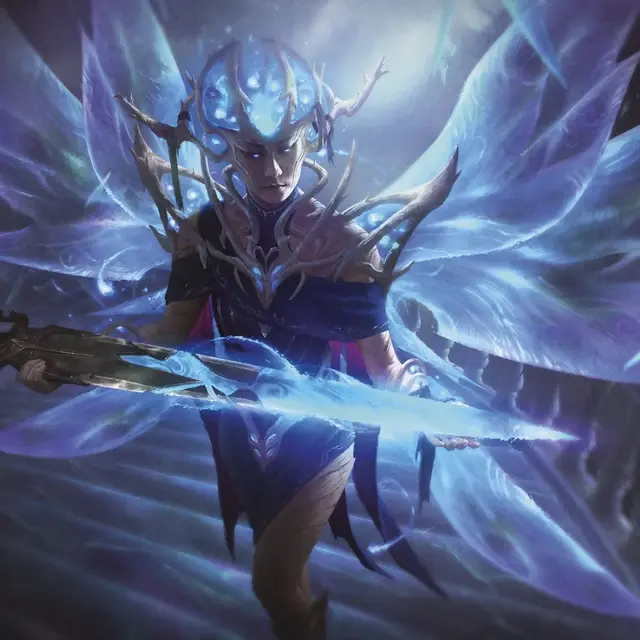

Дворянин высших фей
High Fae Noble
Средняя Фея, любое мировоззрение

Класс Доспеха 17
Хиты 175 (27к8 + 54)
Скорость 40 футов, летая 40 футов (парит)
| мод | спас | ||
|---|---|---|---|
| СИЛ | 13 | +1 | +1 |
| ЛОВ | 25 | +7 | +12 |
| ТЕЛ | 15 | +2 | +2 |
| мод | спас | ||
|---|---|---|---|
| ИНТ | 19 | +4 | +9 |
| МДР | 18 | +4 | +9 |
| ХАР | 22 | +6 | +11 |
Навыки Восприятие +9, История +9, Проницательность +14
Сопротивление урону дробящий, колющий, рубящий от немагических атак
Иммунитет к состояниям испуг, истощение, очарование
Чувства тёмное зрение 60 футов, пассивное Восприятие 19
Языки Общий, Сильван, Телепатия 120 фт.
Опасность 13 (10000 опыта)
Бонус мастерства +5
Особенности
Аура ошеломляющего великолепия. Высшая фея излучают ослепительную и умиротворяющую магию. Каждое существо по выбору высшей феи, начинающее свой ход в пределах 5 футов от неё, должно преуспеть в спасброске Мудрости Сл 19, иначе станет очарованным ею до начала своего следующего хода. Будучи очарованным, существо также недееспособно.
Легендарное сопротивление (3/день). Если высшая фея проваливает спасбросок, вместо этого она может выбрать успех.
Сопротивление магии. Высшая фея совершает с преимуществом спасброски от заклинаний и других магических эффектов.
Действия
Мультиатака. Высшая фея совершает две атаки Клинком фей. Она может заменить одну из этих атак Потрясающим монологом, если доступен.
Клинок фей. . Рукопашная атака оружием: +12 к попаданию, досягаемость 5 фт., одна цель. Попадание: 20 (3к8 + 7) урона силовым полем.
Использование заклинаний. Высшая фея может наложить одно из следующих заклинаний, не требующее материальных компонентов и использует Харизму в качестве базовой характеристики для заклинания (Сл спасброска заклинания 19):
• Неограниченно: обнаружение магии [detect magic], фокусы [prestidigitation], внушение [suggestion];
• 1/день за каждое: образ [major image], область истины [zone of truth].
Потрясающий монолог (перезарядка 5–6). Высшая фея произносят ряд магических слов. Каждое существо по выбору высшей феи в пределах 30 футов должно преуспеть в спасброске Мудрости Сл 19, иначе станет ошеломлённым на 1 минуту. Ошеломленное существо может повторять спасбросок в конце каждого своего хода, прекращая эффект на себе при успехе.
Реакции
Высшая фея может использовать до трёх реакций за раунд, но только одну за ход.
Капризный шаг. Сразу после получения урона высшая фея магическим образом становится невидимой и телепортируются вместе со всем снаряжением, которое она носит или несёт, в незанятое видимое ею пространство, находящееся в пределах 30 футов от себя. Невидимость длится до конца следующего хода высшей феи.
Насмешка. Когда существо при броске атаки промахивается по высшей феи, она магическим образом издевается над существом, нанося атакующему 5 (2к4) урона психической энергией.
Описание
Высшая знать фей считает себя естественным и очевидным настоятелем всех в Элдраине. Многим была предоставлена власть над небольшим аспектом мира природы; Для каждого времени года существуют герцоги и герцогини, а благородные архивариусы отслеживают каждое обещание, данное и нарушенное в границах Элдраина.
Высшая знать фей использует свои иллюзии и врожденную магию, чтобы произвести впечатление на своих сверстников и выразить свою капризную натуру. Многие украшают себя магическими аурами, которые ослепляют других, и при этом произносят насмешливые фразы, которые магическим образом ошеломляют и высмеивают своих противников. Высшая знать фей проводит бесчисленные годы в умопомрачительно сложных играх и политических интригах, их союзы постоянно меняются, пока они борются за благосклонность и статус при дворе Доброго Лорда.
Высшие феи
Нестареющие и бесчеловечные высшие феи — старейшие существа Элдраина, олицетворяющие природное великолепие и опасность дикой природы. Высшие феи не уважают смертные ценности чести и закона, но, действуют по собственным нерушимым правилам: подарки всегда должны быть возвращены, обещания должны соблюдаться, и никогда не следует говорить откровенную ложь (хотя неверное направление и загадки всегда приветствуются). Чтобы развлечься на протяжении долгих столетий своей жизни, высшие феи часто прибегают к обманам и другим сложным остроумным играм друг против друга.
Большинство высших феи остаются уединёнными глубоко в дебрях Элдраина. Они черпают силу из пятнышек света, встречающихся в дебрях, и используют свою врожденную магию иллюзий для усиления и украшения своего оружия.
Высшими феями управляет Талион, Добрый Лорд. Талион столь же странен, древен и непостоянен, как дебри Элдраина, и Добрый Лорд требует от последователей верности и уважения. Несмотря на суровую манеру поведения, Добрый Лорд также известен тем, что следует таинственным прихотям и путешествует в самые дальние уголки Элдраина из-за ненасытного любопытства.